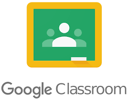

10 LA INFORMACIÓN DIGITAL EN LA EDUCACIÓN Y EL TRABAJO
Educación
La educación digital no se limita a trasladar contenidos al formato online: implica un cambio estructural en la forma de enseñar, aprender y evaluar.
- Uso de plataformas digitales:
- Herramientas como Google Classroom, Moodle, Edmodo, Canvas o Microsoft Teams permiten gestionar clases virtuales, distribuir material, evaluar actividades, realizar foros de debate o mantener contacto directo entre docentes y alumnado.
- Los profesores pueden compartir vídeos, cuestionarios interactivos, documentos colaborativos o enlaces externos, fomentando un aprendizaje activo y autónomo.

- Acceso a recursos interactivos y personalizados:
- El contenido digital puede adaptarse a los diferentes estilos y ritmos de aprendizaje. Ejemplo: plataformas como Khan Academy o Duolingo ajustan automáticamente el nivel de dificultad según el rendimiento del estudiante.
- Se incorporan elementos de gamificación, como insignias, puntos o niveles, que mejoran la motivación.

- Fomento del autoaprendizaje y la educación a distancia:
- Los MOOC (Massive Open Online Courses) han permitido que personas de todo el mundo accedan gratuitamente o a bajo coste a formación especializada, con universidades como Harvard, MIT o Stanford.
- Existen plataformas especializadas según el tipo de aprendizaje: Coursera y edX para cursos universitarios, Udemy para formación práctica, Codecademy para programación, etc.
- Retos:
- Adaptación del profesorado: Muchos docentes no han recibido formación adecuada en metodologías digitales, lo que puede dificultar el uso eficaz de las herramientas.
- Desigualdad tecnológica: No todos los alumnos disponen de acceso a dispositivos o conexión estable, lo que acentúa la brecha educativa.
- Distracción digital: La exposición constante a estímulos en línea puede dificultar la concentración y aumentar el multitasking improductivo.
- Deshumanización del aprendizaje: La ausencia de contacto físico puede limitar la interacción emocional, el trabajo colaborativo presencial o la resolución espontánea de dudas.
Trabajo
El trabajo digital ha evolucionado rápidamente, impulsado por el teletrabajo, la automatización y la necesidad de adaptarse a un entorno altamente competitivo y globalizado.
- Automatización de tareas y análisis de datos:
- Muchas tareas repetitivas o administrativas se realizan mediante software automatizado, como chatbots, hojas de cálculo inteligentes o inteligencia artificial.
- El análisis de grandes volúmenes de datos (Big Data) permite tomar decisiones estratégicas más fundamentadas en áreas como marketing, finanzas, recursos humanos o logística.
- Herramientas colaborativas:
- Aplicaciones como Slack, Trello, Zoom, Notion o Google Workspace permiten la coordinación de equipos distribuidos en diferentes ubicaciones geográficas.
- El trabajo en la nube (Google Drive, OneDrive, Dropbox) facilita el acceso simultáneo a documentos, la edición colaborativa y el almacenamiento compartido.
- Nuevas competencias digitales demandadas:
- Análisis de datos y visualización (Power BI, Tableau).
- Programación y desarrollo web (Python, JavaScript, HTML).
- Ciberseguridad, protección de datos y gestión de riesgos.
- Alfabetización digital: saber navegar, seleccionar y evaluar información en entornos digitales.
- Necesidad de equilibrar el tiempo digital y el bienestar laboral:
- Desigualdad digital: La automatización ha desplazado algunos empleos, especialmente los manuales o repetitivos, mientras que otros se vuelven altamente especializados.
- Fatiga digital: El uso continuo de pantallas, la hiperconectividad y la falta de desconexión digital están provocando síntomas de agotamiento, estrés o burnout.
- Cultura de la inmediatez: Se espera que los empleados estén siempre disponibles, lo que puede generar presión psicológica y dificultades para desconectar del trabajo.
- Ciberseguridad empresarial: El trabajo remoto expone a las empresas a mayores riesgos de ataques si no se implementan protocolos seguros.